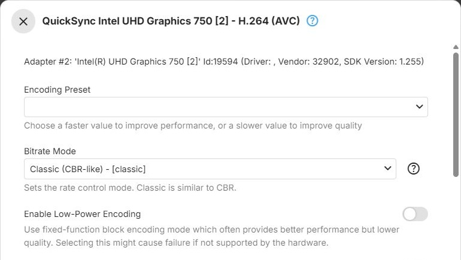

Quick Sync
Quick Sync Encoder Parameters
Intel GPUs encode with Quick Sync Video, the media engine built into Intel graphics. These parameters apply to the Quick Sync encoders of the QSV on D3D11 (Windows) and QSV on VAAPI (Linux) context types - see Intel for the context types, and Encoders for how the dialog works. The VAAPI (Intel) context type uses the VAAPI encoders, and Vulkan (Intel) the Vulkan encoders.
H.264

The h264_qsv encoder for H.264, offered by the QSV on D3D11 and QSV on
VAAPI context types.
Encoding Preset - trades encoding speed against compression efficiency
(preset, ffmpeg preset). Faster presets encode more frames per second
at lower quality for a given bitrate; slower presets the opposite. Choices, from fastest to slowest:
Veryfast, Faster, Fast, Medium, Slow, Slower, Veryslow, after an empty first
entry. Default: empty, which passes no preset, so the encoder's own default applies.
Bitrate Mode - how the bitrate Emby requests is passed to the encoder. Default: Classic (CBR-like).
- Classic (CBR-like) - sets the target bitrate, a maximum rate equal to it and a buffer of twice the bitrate (VBV): a constrained, CBR-like behaviour
- Variable Bitrate (VBR) - sets only the target bitrate and lets the bitrate vary with scene complexity (VBR). Generally better quality for the same amount of data than Classic, with a less predictable size
- Constant Bitrate (CBR) - sets the target bitrate and an equal maximum rate, without the buffer size Classic sets (CBR). For strict bandwidth limits
Enable Low-Power Encoding - uses the GPU's fixed-function
encoding mode, Intel's VDEnc (ffmpeg low_power). It is often faster, but lower in quality. Transcoding
fails if the hardware does not support this mode for the codec. Default: off.
Look-Ahead Rate Control - analyzes upcoming frames before encoding the current one, which allocates
bits more accurately than reacting frame by frame (ffmpeg look_ahead). Improves quality at a given
bitrate, at the cost of extra latency and memory. Default: off.
Look-Ahead Depth - how many frames ahead to analyze (ffmpeg look_ahead_depth). Higher values can
improve bit allocation further, with more latency and memory use. Range 1 to 100; leave it empty (the
default) for the driver's default. Shown only when Look-Ahead Rate Control is on.
Encoding Profile Limit - the highest H.264 profile the encoder may use; empty (the default) means no limit - see Encoding Profile Limit. Offers those of Baseline Profile, Main Profile and High Profile that the GPU reports.
HEVC
The hevc_qsv encoder for HEVC, offered by the QSV on D3D11 and QSV on
VAAPI context types.
Encoding Preset - trades encoding speed against compression efficiency (ffmpeg preset). Faster
presets encode more frames per second at lower quality for a given bitrate; slower presets the opposite.
Choices, from fastest to slowest: Veryfast, Faster, Fast, Medium, Slow, Slower,
Veryslow, after an empty first entry. Default: empty, which passes no preset, so the encoder's own
default applies.
Tier - the HEVC tier, which sets the maximum bitrate allowed at
the encoding level in use (ffmpeg tier). Default: Main.
- Main - the standard tier, sufficient for the vast majority of content and bitrates
- High - allows a higher maximum bitrate at a given level. Only relevant for unusually high bitrates; most playback devices support the Main tier only
Bitrate Mode - how the bitrate Emby requests is passed to the encoder. Default: Classic (CBR-like).
- Classic (CBR-like) - sets the target bitrate, a maximum rate equal to it and a buffer of twice the bitrate: a constrained, CBR-like behaviour
- Variable Bitrate (VBR) - sets only the target bitrate and lets the bitrate vary with scene complexity. Generally better quality for the same amount of data than Classic, with a less predictable size
- Constant Bitrate (CBR) - sets the target bitrate and an equal maximum rate, without the buffer size Classic sets. For strict bandwidth limits
Enable Low-Power Encoding - uses the GPU's fixed-function encoding mode, Intel's VDEnc (ffmpeg
low_power). It is often faster, but lower in quality. Transcoding fails if the hardware does not support
this mode for the codec. Default: off.
Look-Ahead Rate Control - analyzes upcoming frames before encoding the current one, which allocates
bits more accurately than reacting frame by frame. Improves quality at a given bitrate, at the cost of
extra latency and memory. For HEVC, this turns on Quick Sync's extended bitrate control (ffmpeg extbrc),
which performs the look-ahead analysis. Default: off.
Look-Ahead Depth - how many frames ahead to analyze (ffmpeg look_ahead_depth). Higher values can
improve bit allocation further, with more latency and memory use. Range 1 to 100; leave it empty (the
default) for the driver's default. Shown only when Look-Ahead Rate Control is on.
Encoding Profile Limit - the highest HEVC profile the encoder may use; empty (the default) means no limit - see Encoding Profile Limit. Offers those of Main Profile, Main 10 Profile and Main Still Picture that the GPU reports.
AV1
The av1_qsv encoder for AV1, offered by the QSV on D3D11 and QSV on VAAPI
context types.
AV1 encoding is used for media conversions only, not for transcoding during playback.
Encoding Preset - trades encoding speed against compression efficiency (ffmpeg preset). Faster
presets encode more frames per second at lower quality for a given bitrate; slower presets the opposite.
Choices, from fastest to slowest: Veryfast, Faster, Fast, Medium, Slow, Slower,
Veryslow. Default: Medium.
Bitrate Mode - how the bitrate Emby requests is passed to the encoder. Default: Classic (CBR-like).
- Classic (CBR-like) - sets the target bitrate, a maximum rate equal to it and a buffer of twice the bitrate: a constrained, CBR-like behaviour
- Variable Bitrate (VBR) - sets only the target bitrate and lets the bitrate vary with scene complexity. Generally better quality for the same amount of data than Classic, with a less predictable size
- Constant Bitrate (CBR) - sets the target bitrate and an equal maximum rate, without the buffer size Classic sets. For strict bandwidth limits
Enable Low-Power Encoding - uses the GPU's fixed-function encoding mode, Intel's VDEnc (ffmpeg
low_power). It is often faster, but lower in quality. Transcoding fails if the hardware does not support
this mode for the codec. Default: off.
Look-Ahead Rate Control - analyzes upcoming frames before encoding the current one, which allocates
bits more accurately than reacting frame by frame. Improves quality at a given bitrate, at the cost of
extra latency and memory. For AV1, this turns on Quick Sync's extended bitrate control (ffmpeg extbrc),
which performs the look-ahead analysis. Default: off.
Look-Ahead Depth - how many frames ahead to analyze (ffmpeg look_ahead_depth). Higher values can
improve bit allocation further, with more latency and memory use. Range 0 to 100; leave it empty (the
default) for the driver's default. Shown only when Look-Ahead Rate Control is on.
AV1 encoders have no Encoding Profile Limit.